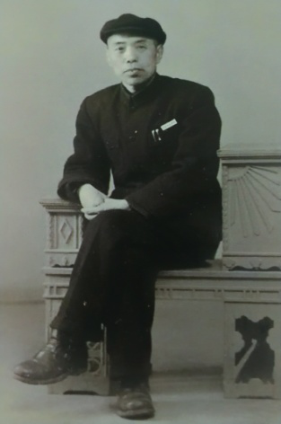

- 中共中央统一战线工作部
- 中共河南省委统战部
- 开封市统战部
- 河南大学
- "河大统战"杂志
风雨同舟 无怨无悔 ——张邃青教授与河南大学的50年情缘 发布时间：2019-12-19 14:45:01 作者：张 绛

(张绛,研究员,原为开封市党史研究室主任,张邃青先生之子)
1927年,张邃青应聘到河南大学的前身中山大学任教授,直至1976年5月逝世,在河南大学工作50年,历任文史系主任、文学院院长、图书馆馆长,并曾任河南省历史学会会长、开封市副市长、河南省政协文史资料工作委员会副主任、民革开封市委副主委,全国第三届人民代表大会代表。
张邃青作为历史学家,治学严谨,潜心历史教学与研究,桃李满天下。在史学领域,他对《史通》、宋辽金元史和河南地方史的研究,成就尤为突出。20世纪30年代初,他先后开设的中州文化史、河南史地研究等课程,开中原地方政治、经济、文化、社会、民族、宗教、民俗等研究之先河。他在教学和研究地方史志中,从不拘泥于课堂、讲义之中。1931年,他亲自带领学生赴安阳参观殷墟发掘,并在文学院史地学会上,就学术研究如何开阔视野,实地考察,发表演讲说:“研究学问,固然须专门,专门然后才能精深。但所谓专门并非坐在屋里,抱住一本书咬文嚼字。”抗日战争爆发,随着日军铁蹄兵临黄河,河南大学向豫南、豫西迁徙,最后辗转到了陕西宝鸡。张邃青一直致力于教学、研究不辍。1938年,在信阳鸡公山,他不顾日军轰炸,专程到信阳街头,购买《信阳县志》；1942年,在嵩县潭头,他不顾艰苦环境,率领学生到伏牛山区考察风俗文物。返校后,亲自做了《豫西山区与中原文化》的学术报告。是年,他还在西北师范学院(即抗战时期的北京师范大学)学报上,发表研究《史通》的论文。该院历史系主任张云波教授还请他去任教,出于与河南大学十余年的感情,他婉谢了。他致力学术活动,当学校第四次迁徙到豫西荆紫关时,他还请好友冯友兰教授为学生做《中国哲学的特点》学术讲座。
张邃青全身心投人学校的各项事务,解放前,河南大学的一些重大事件多与他有关。1941年10月,他的挚友、深受学生爱戴的进步教授嵇文甫,被国民党反动派逮捕,他心急如焚,亲赴洛阳营救,所带衣物全部丢失,直至嵇文甫获释返校,返潭头后,还兴奋地设宴为嵇文甫接风洗尘。1945年8月,日本投降,颠沛流离8年的河南大学师生归心似箭。学校行政会议决定派张邃青带领职工4人,先回开封考察,再定迁返事宜。他返汴后,校内驻有国民党军队三个营,房屋也多有损坏。他多方交涉,组织人力修缮,终于保证河南大学于年底顺利回到开封。1949年4月,人民解放军胜利渡过长江。苏州解放后,南迁的河南大学师生盼望重返开封,张邃青作为教授会公推代表,和学生自治会代表一起,返汴请示回迁事宜。7月,河南省人民政府派开封市文教局长郭海长专程赴苏州,迎接被国民党搬迁至江南的河南大学1200余名师生返回古城,从此,河南大学步人了共产党领导下的新时代。
31949年8月,年逾半百的张邃青参加河南大学研究班,学习马列主义理论。他严于剖析自己,在学习班结束,总结个人的思想时说,我因幼年受到家庭及旧式学校教育,存在着儒家思想。在中学时、在课外看了《新民丛报》一类改良主义的书籍,有改良主义的倾向。在北京高师读书时,正当五四运动时代,参加了开会、游行、演讲,思想上改变较大,比较朝气蓬勃。但回到开封,忙于教学,有超党派思想。直到通过学习,才认识到要想全心全意为人民服务,必须建立革命的人生观。同年10月,河南大学正规院系设计委员会成立,他是成员之一。从此,他的思想开始了质的转变,积极参加学校及社会活动。
他热爱新中国,关心国家大事。1950年11月,他在《光明日报》上看到著名史学家陈垣教授的文章,提出反对美帝国主义侵略,支援朝鲜人民,是历史工作者肩负的历史使命,很受鼓舞。深感陈垣年近七十,尚能如此,自己便将所卖住宅 5000万元(旧币)中,拿出2000万元支援抗美援朝。1962年,他看到冯友兰论文集的序言中“已入膏肓针不易,既成废疾起更难。篇中倘有回春意,应谢明时换骨丹”的诗句,当即协在日记中自勉。1962年6月,他在河南大学《校庆五十周年感言》一文中,对比学校解放前后的巨大变化写道,自己解放前“有机会转业或到其他学校,总不肯离开。但因为政局多变,人民困苦,自己生活不安,心境难免抑郁,常有‘貌虽中年,心颓如翁'的感慨。解放后就大不一样了.在党的领导下,祖国蒸蒸日上,学校也有了根本性的改善,个人工作、学习、生活都很正常,心情舒畅,生命力加强了,有时觉得还年轻,这是党给了我内心的青春。”1963年中秋节,他参加开封市政协举办的赏月晚会上,当场赋诗:“昨日国庆节,今晚月团圆。又值我生日,漫移古稀年。古稀今不稀,志壮体还健。应须学到老,胎骨全脱换。”
张邃青思想觉悟不断提高,使他在致力于教学研究的同时,还积极参加社会活动。加人中国国民党革命委员会并担任民革开封市委副主委后,竭诚团结原国民党党政军各界人士,学习共产党的方针政策,积极参加社会主义建设事业。
1956年12月,他在开封市第二届人民代表大会上,当选副市长。他先后分管文化教育及体育卫生工作。 他作为民主人士,参加市长办公会议,积极发表意见,献言献策,尽职尽责。他谙熟河南地方史料,对于博物馆、外事、统战等部门来访,总是热情接待,提供资料。对于古城文物的修缮与保护,更是十分关切。作为河南贡院旧址的河南大学内,珍贵的河南贡院碑长期散遗在院中。1963年12月,张邃青亲自提交市长办公会议研究,拨出专款在校内修建四角凉亭,将贡院碑竖立于内,并列为重点文物予以保护。
张邃青作为专家、学者型的副市长,各种接待任务也很繁重。1958年,捷克白立德博士来汴,他和刘绍孟教授等一起接待,翔实地回答了来宾提出的有关宋代城垣、汴河、黄河等问题,白立德十分满意。中共中央宣传部副部长张磐石、内务部部长曾三等来古城参观,他都作陪介绍。特别是1963年10月18日,朱德委员长莅汴,他与开封市委书记徐学龙陪同参观了铁塔、龙亭等古迹。78岁高龄的朱德那种平易近人,乡问好学的风范,使他深受教育。羿年,他到北京参加第三届全国人民代表大会,好友冯友兰及其学生,外父部削部长王国权、著名历史学家白寿彝、尹达等去看望他时,还兴致物勃地谈到,自己一定要向朱德委员长学习,积极参政议政,为社会主义建设贡献力量。
张邃青为人忠厚,严于律己,对子女要求也很严格。7个儿女多受到高等教育,其中有4人毕业于河南大学。解放后,儿女都参加了革命工作,有的在部队,有的在新闻单位或高等院校,有的在党政机关,多不在他的身边。 他除平时写信希望子女听党的话、努力工作外,就是子女因公或休假到开封探亲时,他总是催促要按时返回工作岗位,不要影响工作。
“文化大革命”中,他被戴上了“资产阶级反动权威”、“历史反革命”等帽子,游街示众。年逾古稀之年,仍被迫参加劳动,到工地清理砖瓦。逆境中,他始终相信共产党,相信组织,相信群众。境遇稍好一点,他还做一些力所能及的工作。1972年,河南省有一批书法作品准备出国展览,他拖着活动不便的双腿,专程到郑州参加文物鉴定。
1975年秋,张邃青患病住院。卧床半年,头脑始终清醒. 守护在身边的子女问他有关历史书籍、典故,他都对答如流。他多次谈到自己半生工作、生活在河南大学,虽无多大贡献,但与学校共进共荣,同舟共济,无怨无悔。
1976年5月24日,张邃青病逝,终年83岁。尽管当时强加在他头上的种种罪名并未去掉,但是深深了解他为人的许多老教授、老干部,都无限悲痛。冯友兰发来了唁电,开封市副市长王子珍、市委统战部部长贾子云等参加了追悼会,《河南日报》刊登了消息。1979年,中共十一届三中全会以后,党组织彻底为他平反,恢复了名誉。